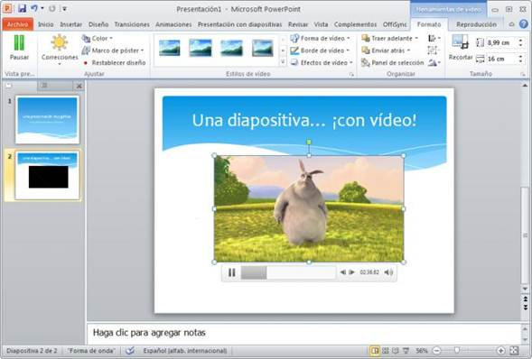
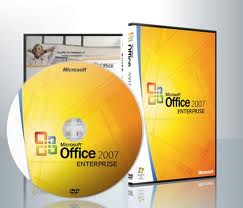

Microsoft Office
|
Microsoft Office |
|
|
|
|
|
Desarrollador |
|
|
Microsoft |
|
|
Información general |
|
|
Lanzamiento |
1990 |
|
Última versión estable |
2010 (Compilación
14.0.6023.1000 SP1) |
|
Última versión en pruebas |
2012 (Compilación 15.0) |
|
Género |
Suite Ofimática |
|
Programado en |
C++, C-sharp |
|
Sistema operativo |
Microsoft Windows |
|
Plataforma |
Multiplataforma |
|
Licencia |
Propietario / Microsoft CLUF (EULA) |
|
Idiomas |
35+ |
|
En español |
|
|
Soporte técnico |
|
|
Todas las versiones de la suite ofimática Microsoft Office
reciben un grado variable de soporte, bajo la directiva de Ciclo de
vida de soporte técnico de Microsoft (info) |
|
|
Microsoft Office: mac |
|
|
Desarrollador |
|
|
Microsoft |
|
|
Información general |
|
|
Lanzamiento |
1989 |
|
Última versión estable |
2011 (Versión 14.0.0) |
|
Género |
Suite Ofimática |
|
Programado en |
C++, Carbon |
|
Sistema operativo |
Mac OS |
|
Plataforma |
Multiplataforma |
|
Licencia |
Propietario / Microsoft CLUF (EULA) |
|
En español |
|
|
Soporte técnico |
|
|
Todas las versiones de la suite ofimática Microsoft Office
reciben un grado variable de soporte, bajo la directiva de Ciclo de
vida de soporte técnico de Microsoft (info) |
|
Microsoft Office es una suite de oficina que abarca e interrelaciona aplicaciones de escritorio, servidores y servicios para los sistemas operativos Microsoft Windows y Mac OS X. Microsoft Office fue lanzado por Microsoft en 1989 para Apple Macintosh,1 más tarde seguido por una versión para Windows, en 1990.2 La primera versión de Office contenía Microsoft Word, Microsoft Excel y Microsoft PowerPoint. Además, una versión "Pro" (profesional) de Office incluía Microsoft Access y Schedule Plus. Con el tiempo, las aplicaciones de Office han crecido sustancialmente y de forma más estrecha con características compartidas, como un corrector ortográfico común, la integración de datos OLE y el lenguaje de secuencias de comandos de Microsoft, Visual Basic para aplicaciones. Microsoft también posiciona Office como una plataforma de desarrollo para software de línea de negocios, bajo la marca de Office Business Applications (aplicaciones empresariales de Office u OBA por sus siglas en inglés).
La suite usó desde 1997 hasta 2003 un grupo de formatos conocido como 97-2003 o 98-2004. En los años 2007 y 2008 con la introducción de Office 2007 y Office 2008, se crearon un nuevo grupo de formatos denominados Office Open XML (docx, xlsx, pptx), los cuales se mantienen en las más recientes versiones de la suite, Office 2010 y Office 2011 para Mac.
De acuerdo con Forrester Research, a Junio de 2009 las diferentes versiones de Microsoft Office son usadas por más del 80% de las empresas alrededor del mundo. La última versión (Office 2007/Office 2008) ocupa el 80% de las instalaciones. Actualmente, el paquete ofimático de Microsoft afronta una fuerte competencia por parte OpenOffice.org, LibreOffice, IBM Lotus Symphony, Google Docs y iWork.
Breve historia
Office hizo su aparición en 1989 en un Mac, y más adelante en Windows en 1990. El término fue inicialmente usado en marketing para vender un set de aplicaciones, que previamente se vendían separadamente. El principal argumento de venta era que comprar el paquete completo resultaba más barato que comprar cada aplicación por separado. La primera versión de Office contenía las aplicaciones Microsoft Word, Microsoft Excel y Microsoft PowerPoint. Adicionalmente, una llamada "versión profesional" de Office incluía también Microsoft Access y Schedule Plus.
Con el transcurso de los años las aplicaciones de Office han crecido sustancialmente desde un punto de vista técnico, incluso comparten funcionalidades, tales como: corrector ortográfico común, un integrador de datos OLE y el lenguaje de scripts de Visual Basic para Aplicaciones. Microsoft también posiciona a Office como una plataforma de desarrollo para la línea de software para negocios.
Las versiones actuales son Office 2010 para Windows, lanzada el 15 de abril de 2010 y Office 2011 para Mac. Office 2010, anunciado el 15 de abril de 2010 fue liberado el 15 de Abril de 2010 para negocios a través de los canales de MSDN. Una nueva interfaz de usuario y un nuevo formato de archivo primario basado en XML (llamado OpenXML) caracterizan esta versión.
Este paquete como tal es, probablemente, el más antiguo y de mayores prestaciones.[cita requerida] Hay quienes creen que es uno de los mejores productos conjuntos (set) de microsoft, y desde hace más de 10 años es el más popular.[cita requerida] El iWork de Mac es un rival para ese paquete propietario.
Microsoft siguió con Office la estela del paquete Lisa Office System de Apple que ya en 1983 ofrecía procesador de texto y hoja de cálculo entre sus siete aplicaciones, bajo un sistema operativo con ventanas, escritorio y papelera, 12 años antes del Windows 95.
La última versión RTM, llamada Office 2010 ó también llamada Office 14, se lanzó al mercado el 15 de junio de 2010, dicha versión es la compilación 14.0.4760.1000, la cual se encuentra disponible en 35 idiomas.
Programas comunes de Office
Word
Microsoft Word es el procesador de textos de la suite. Word posee una posición dominante en el mercado de los procesadores de texto. Su formato propietario DOC es considerado un estándar de facto, aunque en su más reciente versión, Word 2007 utiliza un nuevo formato basado en XML llamado .DOCX, pero también tiene la capacidad de guardar y abrir documentos en el formato DOC. Word está también incluido en algunas versiones de Microsoft Works. Está disponible para las plataformas Microsoft Windows y Mac OS. La primera versión de Word, liberada en 1983, fue para el sistema operativo MS-DOS y tuvo la distinción de introducir en el uso del mouse a una gran cantidad de personas. Word 1.0 podía ser comprado con un mouse, aunque era opcional. La siguiente primavera, Apple lanzó el Mac, y Microsoft desarrolló Word para Mac, el cual se convirtió en la aplicación más popular para este sistema. Requería (como todas las aplicaciones para Mac) la utilización de un ratón.
Extensiones comunes: .doc (Word 97-2003), .docx (Word 2007-2010), .dot, rtf (todas).
Excel
Microsoft Excel es un programa de hoja o planilla de cálculo. Al igual que Microsoft Word, posee actualmente un mercado dominante. Fue originalmente el más fuerte competidor del entonces popular Lotus 1-2-3, y en tercera posición estuvo Quattro Pro; pero eventualmente Excel se vendió más, se popularizó y se convirtió en el estándar de facto. Está disponible para plataformas Windows y Macintosh.[cita requerida]
Extensiones comunes: .xls (Excel 97-2003), .xlsx (Excel 2007-2010)
PowerPoint

Microsoft PowerPoint es un muy popular programa para desarrollar y desplegar presentaciones visuales en entornos Windows y Mac. Es usado para crear diapositivas multimediales, es decir,compuestas por texto, imágenes, sonido, animaciones y vídeos. Office Mobile para Windows Mobile 5.0 y versiones posteriores poseen una versión de PowerPoint llamada PowerPoint Mobile. Esta versión reducida permite incluso agregar vídeos y sonido a las diapositivas.
Extensiones comunes: .ppt, pps (Powerpoint 97-2003), .pptx, .ppsx (Powerpoint 2007-2010)
Outlook/Entourage
Microsoft Outlook (no confundir con Outlook Express) es un administrador de información personal y un complejo cliente de correo electrónico. El reemplazo para Windows Messaging, Microsoft Mail y Schedule+ comenzó en la versión 97 de Office. Incluía un cliente de correo electrónico, un calendario, un administrador de tareas y un directorio de contacto. Aunque históricamente ha estado disponible para Mac, el equivalente más cercano para Mac OS X es Microsoft Entourage, el cual ofrece un conjunto más reducido de funcionalidades.
Extensiones comunes: .msg .pst (Outlook 97-2003), - Microsoft Outlook 2007
Servicios Web
Ciclo de vida de los productos
Desde 2002, Microsoft estableció la directiva de ciclos de vida de productos.
Ediciones
La última versión de la suite ofimática es Office 2010. La versión para Windows de Microsoft Office 2010 está disponible en 5 ediciones:
La versión para Mac, Microsoft Office para Mac 2004, está disponible en tres ediciones. Todas incluyen Microsoft Word, PowerPoint y Entourage. El software incluido es idéntico en cada paquete excepto por la versión profesional, que incluye Virtual PC. La versión "Students and Teachers" no puede ser actualizada, lo cual quiere decir que cuando una nueva versión de Office sea liberada, la persona que compró la mencionada versión deberá adquirir nuevamente el paquete completo, el cual costará más, comparado con uno de sólo actualización.
|
Contenido de Microsoft Office 2004 para Mac4 |
|
|
Student and Teacher/Standard |
Professional |
|
Word |
Word |
|
Excel |
Excel |
|
PowerPoint |
PowerPoint |
|
Entourage |
Entourage |
|
Virtual PC |
|
Versiones

Versiones para Windows
|
Versión |
Fecha |
Componentes |
Comentarios |
|
3.0 (90) |
30 de agosto de 1990 |
Word 2.0c, Excel 4.0a, PowerPoint 3.0, Mail. |
|
|
4.0 |
17 de enero de 1994 |
Word 6.0, Excel 4.0, PowerPoint 3.0 |
|
|
4.2 |
3 de julio de 1994 |
Word 6.0, Excel 5.0, PowerPoint 4.0, Office Manager |
Versiones compatibles con 16 bits, 32 bits y Alpha |
|
4.3 |
2 de junio de 1994 |
Word 6.0, Excel 5.0, PowerPoint 4.0, Mail 3.2, Access 2.0 |
Última versión compatible con 16 bits; última versión para Windows 3.x, NT 3.1 y 3.5 |
|
7.0 (95) |
30 de agosto de 1995 |
Word 7.0, ... |
Coincide con el lanzamiento de Windows 95 |
|
8.0 (97) |
30 de diciembre de 1996 |
Word 97, Excel 97, PowerPoint 97, ... |
Ediciones en 1 CD-ROM y en 45 disquetes, la versión Service Release 2 corrigió el problema del año 2000; última versión para Windows NT 3.51 |
|
9.0 (2000) |
27 de enero de 1999 |
Word 2000, Excel 2000, PowerPoint 2000, Access 2000, ... |
Última versión para Windows 95 |
|
10.0 (XP/2002) |
31 de mayo de 2001 |
Word 2002, Excel 2002, PowerPoint 2002, Access 2002, ... |
Última versión para Windows 98, Me y NT 4; compatibilidad mejorada para trabajo en cuentas restrictivas en sistemas de la línea NT (Windows 2000, XP) |
|
11.0 (2003) |
17 de noviembre de 2003 |
Word 2003, Excel 2003, PowerPoint 2003, Access 2003, Outlook 2003, ... |
Última versión para Windows 2000 |
|
12.0 (2007) |
30 de enero de 2007 |
Word 2007, Excel 2007, PowerPoint 2007, Access 2007, Outlook 2007, ... |
Lanzado junto con Windows Vista, nueva interfaz gráfica de usuario, nuevos formatos de archivo OpenXML. |
|
14.0 (2010) |
15 de junio de 2010 |
Word 2010, Excel 2010, PowerPoint 2010, Access 2010, Outlook 2010, ... |
Su número de versión no es 13 por superstición;5 es distribuido en versiones de 32 y 64 bits6 7 |
Versiones para Mac
|
Versión |
Fecha |
Componentes |
Comentarios |
|
1.0 |
1990 |
Word 3.0, ... |
|
|
2.0 |
1992 |
Word 4.0, ... |
|
|
3.0 |
1993 |
Word 5.0, Excel 4.0, PowerPoint 3.0, ... |
|
|
4.2 |
1994 |
Word 6.0, Excel 5.0, PowerPoint 4.0, ... |
|
|
4.2.1 |
2 de junio de 1994 |
Word 6.0.1, Excel 5.0, PowerPoint 4.0, ... |
|
|
8.0 (98) |
15 de marzo de 1998 |
Word 98, Excel 98, PowerPoint 98, ... |
|
|
9.0 (2001) |
11 de octubre de 2000 |
Word 2001, Excel 2001, PowerPoint 2001, ... |
|
|
10.1.9 (X) |
19 de noviembre de 2001 |
Word X, Excel X, PowerPoint X, ... |
primera versión para Mac OS X |
|
11.3.5 (2004) |
11 de mayo de 2004 |
Word 2004, Excel 2004, PowerPoint 2004 y Entourage 2004 |
|
|
11.5.5 (2004) |
09 de junio de 2009 |
Word 2004, Excel 2004, PowerPoint 2004 y Entourage 2004 |
|
|
12.0 (2008) |
15 de enero de 2008 |
Word 2008, Excel 2008, PowerPoint 2008 y Entourage 2008 |
primera versión con soporte para AppleScript |
|
12.1.0 (2008) |
14 de mayo de 2008 |
Word 2008, Excel 2008, PowerPoint 2008 y Entourage 2008 |
|
|
12.1.9 (2008) |
9 de junio de 2009 |
Word 2008, Excel 2008, PowerPoint 2008 y Entourage 2008 |
|
|
14.0.0 (2011) |
26 de octubre de 2010 |
Word 2011, Excel 2011, PowerPoint 2011 y Outlook 2011 |
Aplicaciones descontinuadas